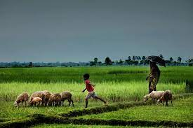
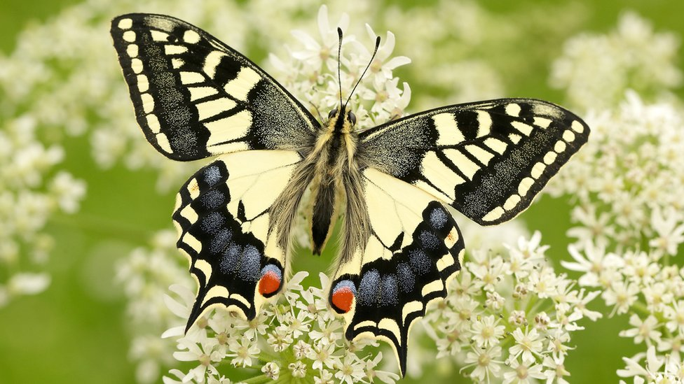

Welcome to my website
Butterflies are insects in the macrolepidopteran clade Rhopalocera from the order Lepidoptera, which also includes moths. Adult butterflies have large, often brightly coloured wings, and conspicuous, fluttering flight. The group comprises the large superfamily Papilionoidea, which contains at least one former group, the skippers (formerly the superfamily "Hesperioidea"), and the most recent analyses suggest it also contains the moth-butterflies (formerly the superfamily "Hedyloidea"). Butterfly fossils date to the Paleocene, about 56 million years ago. Butterflies have a four-stage life cycle, as like most insects they undergo complete metamorphosis. Winged adults lay eggs on the food plant on which their larvae, known as caterpillars, will feed. The caterpillars grow, sometimes very rapidly, and when fully developed, pupate in a chrysalis. When metamorphosis is complete, the pupal skin splits, the adult insect climbs out, and after its wings have expanded and dried, it flies off. Some butterflies, especially in the tropics, have several generations in a year, while others have a single generation, and a few in cold locations may take several years to pass through their entire life cycle. Butterflies are often polymorphic, and many species make use of camouflage, mimicry, and aposematism to evade their predators.[1] Some, like the monarch and the painted lady, migrate over long distances. Many butterflies are attacked by parasites or parasitoids, including wasps, protozoans, flies, and other invertebrates, or are preyed upon by other organisms. Some species are pests because in their larval stages they can damage domestic crops or trees; other species are agents of pollination of some plants. Larvae of a few butterflies (e.g., harvesters) eat harmful insects, and a few are predators of ants, while others live as mutualists in association with ants. Culturally, butterflies are a popular motif in the visual and literary arts. The Smithsonian Institution says "butterflies are certainly one of the most appealing creatures in nature".
